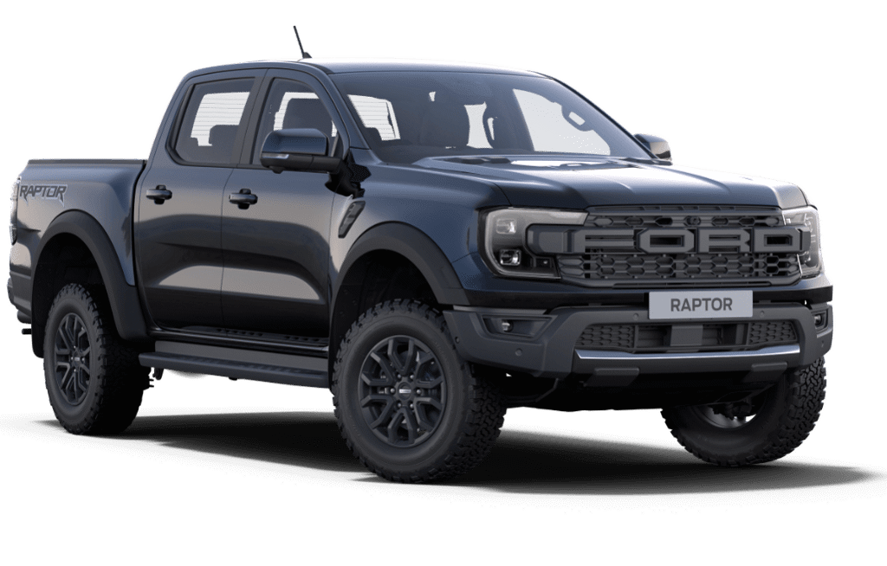

Ford Ranger Raptor
Ano:2025
Cores: Cinza Interlagos, Azul Belize, Laranja Saara
Descrição:
Motorização e Desempenho:
Motor: 3.0 V6 Biturbo a gasolina (EcoBoost).
Potência: Aproximadamente 397 cv a 5.650 rpm.
Torque: Cerca de 59 kgfm a 3.500 rpm.
Câmbio: Automático de 10 marchas com trocas rápidas e suaves.
Tração: 4x4 sob demanda, com diferencial traseiro blocante e sistema eletrônico de tração,
0 a 100 km/h: Aproximadamente 6,0 segundos.
Velocidade máxima: Limitada eletronicamente a cerca de 180 km/h.
Corte de giro: Eletronicamente gerenciado, com V6 girando bem até a faixa dos 6.000 rpm.
Consumo médio:
Cidade: 6,8 km/l (gasolina) /
Estrada: 8,5 km/l (gasolina).
Tecnologia e Conectividade:
Central multimídia SYNC 4 com tela de 12" sensível ao toque,
Compatível com Android Auto e Apple CarPlay sem fio,
Painel de instrumentos 100% digital de 12,4" personalizável,
Sistema de som Bang & Olufsen com 8 alto-falantes + subwoofer
Modos de condução: Normal, Esportivo, Lama/Terra, Rochedos, Areia, Neve e Baja (corridas no deserto),
Conectividade via FordPass para acesso remoto, alertas, localização e status do veículo pelo celular.
Segurança:
Airbags frontais, laterais, de cortina e de joelhos,
Frenagem autônoma de emergência (AEB),
Controle de cruzeiro adaptativo com Stop & Go,
Assistente de permanência em faixa com correção ativa,
Câmera 360° e sensores de estacionamento dianteiros/traseiros,
Assistente de descida, controle de reboque e assistente de frenagem pós-colisão,
Controle de estabilidade e tração com sistema anticapotamento.
Estilo musculoso com para-lamas alargados e carroceria reforçada,
Grade frontal exclusiva com logotipo “FORD” em letras grandes,
Faróis Full LED Matrix com DRL em formato de C,
Rodas de liga leve aro 17” com pneus BF Goodrich KO2 todo-terreno,
Skid plates de aço sob a carroceria para trilhas e terrenos acidentados,
Escapamento duplo com som ajustável (válvula ativa),
Adesivos e acabamento em preto fosco exclusivos da versão Raptor.
Interior e Conforto:
Bancos esportivos com espuma especial e revestimento em couro e camurça, com costuras laranja,
Volante esportivo com marcação central, paddle-shifters em magnésio e o emblema “Raptor”,
Acabamento premium com detalhes em fibra de carbono e alumínio escurecido,
Ar-condicionado digital de duas zonas com saídas traseiras,
Assentos dianteiros com ajuste elétrico e aquecimento,
Direção elétrica progressiva e isolamento acústico reforçado,
Iluminação ambiente em LED e teto com acabamento escurecido.
Dimensões:
Comprimento: 5.390 mm,
Largura: 2.028 mm (sem espelhos),
Altura: 1.926 mm,
Entre-eixos: 3.270 mm,
Porta-malas (caçamba): Capacidade de carga ~640 kg,
Peso: Aproximadamente 2.450 kg,
Capacidade de reboque: Até 2.500 kg.
Valor: R$481,799